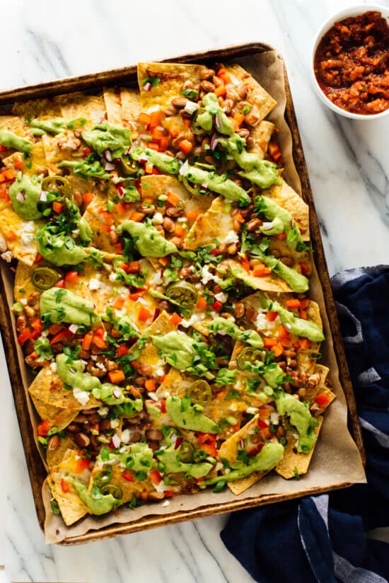

Loaded Veggie Nachos

My ideal nachos are topped with golden, bubbling cheese, not drizzled with nacho cheese sauce
that often goes cold in three minutes. I prefer a combination of two cheeses—cheddar, for maximum
flavor and golden edges, and Monterey Jack, for its more melty and creamy texture.
INGREDIENTS
- 8 ounces sturdy tortilla chips
- 1 can (15 ounces) pinto beans, rinsed and drained, or 1 ½ cups cooked pinto beans
- 1 packed cup (4 ounces) shredded cheddar cheese
- 1 packed cup (4 ounces) shredded Monterey Jack cheese, or additional cheddar
- 1 medium red bell pepper, finely chopped
- ⅓ cup crumbled feta cheese
- Pickled jalapeños, to taste
- Avocado dip, thinned with water until it reaches a drizzly consistency, or guacamole
- ⅓ cup chopped green onions
- 2 radishes, chopped
- 2 tablespoons chopped cilantro
- Your favorite salsa